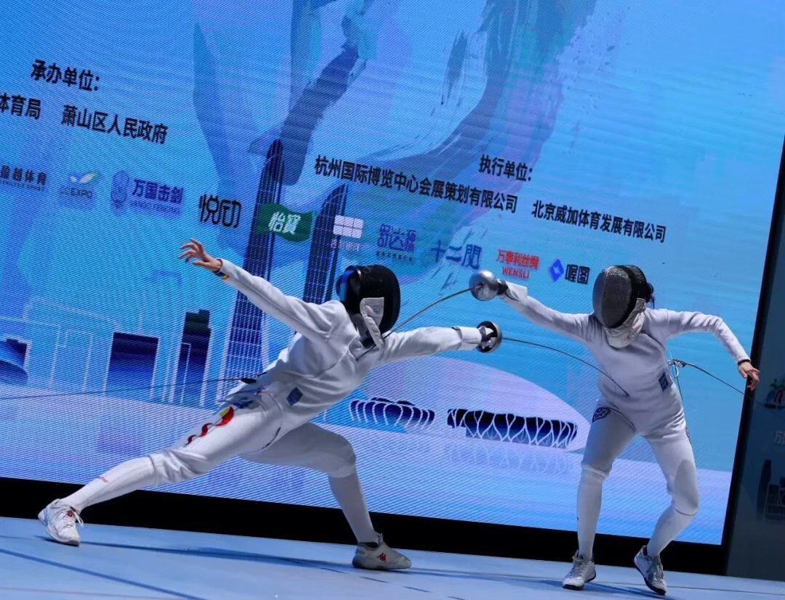
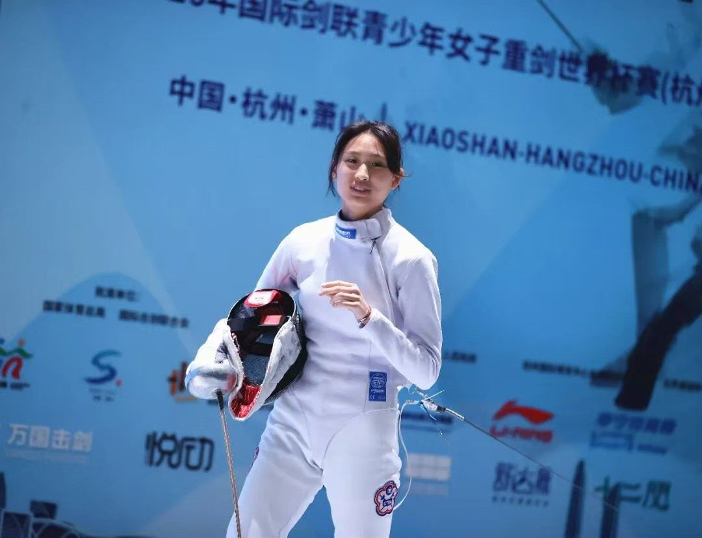

01我的故事
初次踏上劍道的那一天
我與擊劍的緣分，從小學時開始。當時父母只是希望我在暑假接觸不同運動，因此替我報名了擊劍夏令營。在接觸擊劍之前，我其實是打排球的，但第一次踏上劍道時，我就立刻被這項運動吸引。對我而言，擊劍最特別的地方，是它需要極高的專注力。當比賽開始時，我腦中只剩下「下一分」，外界的聲音與壓力彷彿都消失了。隨著訓練與比賽經驗累積，我慢慢明白，真正的成長從來不是一蹴可幾，而是靠著每天不斷努力、堅持與耐心累積而成。我也因為一步一步穩定前進，最終成為台灣史上最年輕、也是第一位登上青少年女子銳劍世界排名第一的選手。

